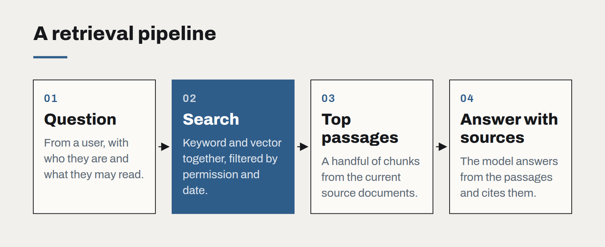

Retrieval before fine-tuning
When a model doesn't know your business, the instinct is to train it. Nine times in ten, the better answer is to hand it the right documents at the right moment.
A general-purpose language model knows a great deal about the world and nothing about your pricing policy, your product catalogue or last month's board minutes. When teams notice this, the first idea is usually fine-tuning: take the model, feed it the company's documents, and teach it the business.
It is an understandable instinct and, for most business problems, the wrong first move. The better starting point is retrieval — finding the handful of relevant passages for each question and placing them in front of the model as it answers.
What each technique is actually for
Fine-tuning changes how a model behaves. It is good at teaching style, format and narrow skills: always answer in this structure, classify these tickets into our twelve categories, write in our house voice. It is poor at teaching facts, and worse at teaching facts that change. A fine-tuned model that learned your price list in March will confidently quote March prices in September.
Retrieval changes what a model knows at the moment it answers. The facts live in your documents and databases, where they already are and where people already maintain them. Update the source, and the next answer reflects it. No retraining, no new model version, no drift between what the business knows and what the model believes.

Why retrieval wins first
- Freshness. Knowledge stays in the systems of record. The model reads the current version every time.
- Citations. Because the model is answering from specific passages, it can show them. Users can check the source, and wrong answers can be traced to a wrong or missing document.
- Permissions. Retrieval can respect who is asking. A staff member sees answers drawn from documents they are allowed to read; a customer sees only public material. A fine-tuned model has no such boundary — whatever it learned, it may repeat to anyone.
- Cost and reversibility. A retrieval pipeline is ordinary software: an index, a search step, a prompt. It can be changed in an afternoon. A fine-tuning run is a training job, an evaluation cycle and a new artefact to manage.
Where retrieval projects actually go wrong
Most retrieval systems that disappoint do so for boring reasons, not clever ones. The documents are out of date, duplicated or contradictory. Chunks are cut in the middle of a table, so the answer is on one side and the heading on the other. The search step finds passages that share words with the question but not meaning. Nobody measured whether the right passage was retrieved at all, so every failure was blamed on the model.
The fix is to treat retrieval as a search problem first. Build a small set of real questions with the passages that answer them, and measure whether the pipeline finds those passages before you measure anything about the model's prose. Hybrid search — combining keyword matching with vector similarity — is usually worth the small extra effort. Clean the source documents; it is the least glamorous and most effective step in the whole project.
When fine-tuning earns its place
Fine-tuning becomes worthwhile once retrieval is working and a specific, stable behaviour is still wrong: output that must follow a strict schema, a classification task with thousands of labelled examples, or a smaller, cheaper model that needs to match a larger one on a narrow job. Even then, the two combine well. A fine-tuned model that has learned how to read and cite your documents, fed by a good retrieval pipeline, is often the strongest design of all.
But start with retrieval. It is cheaper, safer and honest about where its answers come from.
Governing AI use without banning it
Staff are already using AI tools, approved or not. A short, practical policy — backed by tools people actually want to use — protects the business better than a prohibition nobody follows.
Write prompts like specifications
The prompts that hold up in production read less like clever incantations and more like a well-written brief for a new colleague. Treat them as code: versioned, reviewed and tested.
The real cost of an AI feature
The token bill is the smallest line in the budget. Evaluation, review, support and change management are where AI features actually cost money — and where the business case should look first.